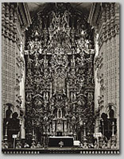
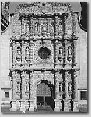
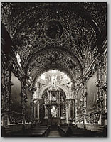
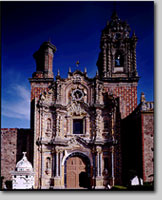
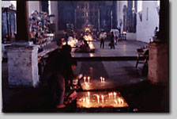

|
聖なる場所、メキシコを行く
小野一郎
最初にメキシコを訪れたのは、1985年。それ以後何度となく通いつめた。最初は教会にはじまり、「死者の日」の祭りやコロニアル・ホテルなども見てまわった。メキシコというといまだソンブレロにサボテンなどというイメージの人もいるかもしれないが、実に多彩な文化をもった国なのである。
広大な国土をもっているので、北部の砂漠地帯、中央部の高原地帯、南部の熱帯ジャングルと、地域によって風土が異なる。古代文明の時代から、それぞれ多様な先住民族が異なった言語を話し、それぞれの文化をもっていた。現代でも公用語はスペイン語だけれど、先住民は部族ごとにさまざまな言語を使っている。
そんなわけで、先住民の職人たちが見よう見真似でつくった教会堂も、地方色豊かなおかしなものがたくさんある。メキシコシティなどで教会建設の指揮をとった建築家はスペインから派遣されてきた人だが、地方の教会堂では先住民の棟梁が先住民の職人を従え、ヨーロッパから持ち込まれた教会堂の図版を模したり、メキシコシティの教会堂を手本にしたりしていたからだ。
産出される建築素材は地方ごとに異なり、雨量の違いや地震の有無、スペインからの情報伝達の差や古代からの伝承の違いも建築に反映されている。
スペインからの情報が豊富だった首都のメキシコシティや、タスコやグァナファト、サン・ルイス・ポトシ、サカテカスなどの鉱山都市には、西洋バロック顔負けの壮麗で洗練されたものが多い。それに対して、先住民族が多く地場産業や農業で栄えたプエブラのような地方都市では、早い時期からメキシコ独自のスタイルが展開し、ロサリオ礼拝堂のような、メキシコ・バロックの傑作を生んだ。
|

タスコのサン・セバスチアン
・イ・サンタ・プリスカ教会堂
|

サカテカスのカテドラル
|
さらにその郊外にあるアカテペックやホラルパンのような村では、プエブラのもの以上に教会堂の中も外も飾りたてられ、辺境住民の自由なキリスト教の解釈が反映されている。これらの村の教会堂は色とりどりの極彩色で覆われていて、強い日射しも相まって目がくらくらする。この色による幻覚効果は、古代の祭礼儀式のなごりだと、私は思っている。
|

プエブラのロサリオ礼拝堂
|

アカテペックのタイルの教会堂
|
現在のメキシコで、古代祭礼のなごりを色濃く残すのがチアパス州の辺境にある教会堂だ。宗教的にもローマ・カトリックとは程遠く、マヤの伝承カトリックといえばよいだろうか。祭礼の日に堂内に入ると、薄暗い中にもうもうと香がたちこめ、椅子のない平土間にびっしりと魔除けの松葉が敷き詰められている。お祈りをする人とロウソク、卵、コーラなどのお供えで足の踏み場がない。神父ならぬ祈祷師がコーラをひとくち口に含み、松の葉の床に頭をつけてとりつかれたかのように甲高い声で祈っている。「写真は魂を抜く」という迷信が生きているから、撮影はおのずと命がけになる。
|

チチカステナンゴのサント・トーマス聖堂、
マヤの先住民による参拝の光景
|
建築物だけでなくメキシコのお盆である「死者の日」の墓地の飾り付けにも、都市と辺境、村ごとの風習の違いなどで地方色が見られる。ミチョアカン州ハニツィオ島の墓地では、木で組まれた花と果物の祭壇が林立し、ロウソクが横一列に並び、民族衣装の女子供だけが墓地で一晩明かしていた。古式が守られてきたのだろう。同じ地方でもツィンツンツァンなどでは、個人の創意が家族ごとに異なった飾り付けを競い合い、見世物の域に達している。また、オアハカ州ホホコトランの墓地は、アクロバティックな飾り付けは控えているものの、膨大な献花がなされ、老若男女が先祖の帰りを囲む心温まる夜だった。今度は古代マヤ文明のあったユカタン半島の「死者の日」を訪れてみたいと思っている。
著者について 小野一郎（おの・いちろう）
1960年京都生まれ。写真家／一級建築士。早稲田大学理工学部建築学科卒業、同大学院修士課程修了、日建設計等に勤務後1990年に独立、スペイン・コロニアル地域の撮影を始める。写真集に「ウルトラバロック」（新潮社、1995年）、「DIVINE
EXCESS」（アメリカ・CHRONICLE BOOKS、1996年）、「メキシコ：バロック」「メキシコ：ホテルズ」「メキシコ：アイコンズ」（共にアスペクト、2000年）。
|